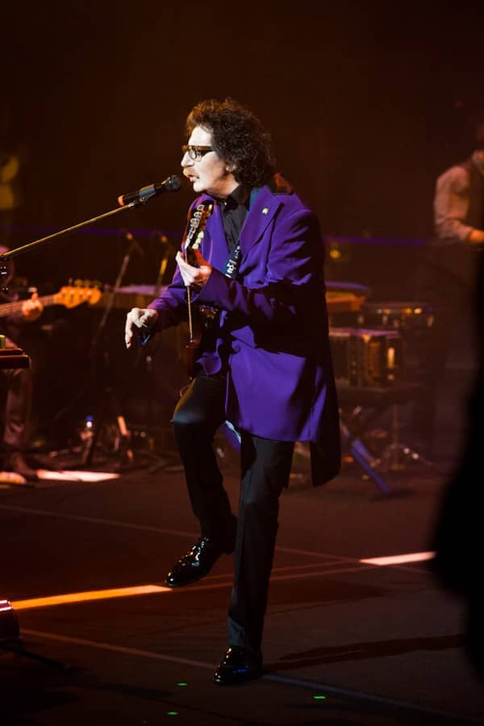
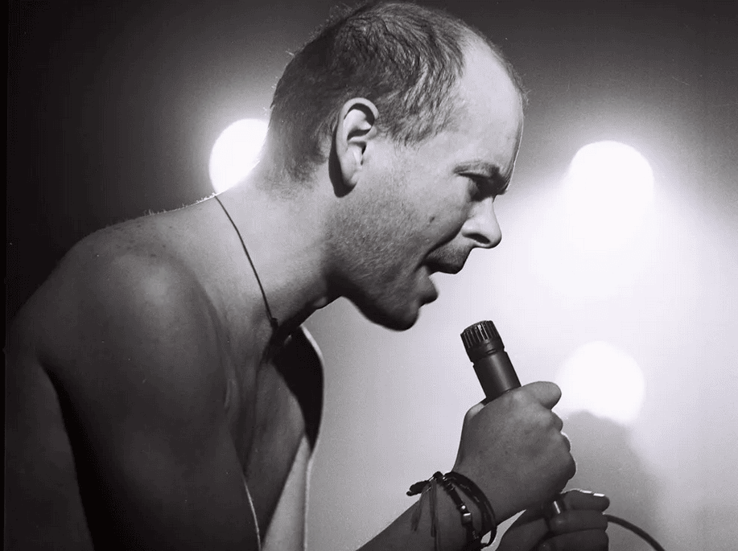

El rock nacional argentino es un género que ha marcado profundamente la cultura del país,
convirtiéndose en una voz
poderosa para expresar las inquietudes y sueños de varias generaciones. Nacido en los años 60,
el rock argentino comenzó
como una adaptación del rock anglosajón, pero rápidamente encontró su propio camino, fusionando
ritmos locales y
temáticas que resonaban con la realidad social y política del país.
Durante la dictadura militar, el rock se convirtió en una forma de resistencia, con letras que,
aunque a menudo veladas,
denunciaban la opresión y clamaban por libertad. Este período vio el surgimiento de íconos como
Charly García, Luis
Alberto Spinetta y Gustavo Cerati, quienes no solo redefinieron el rock argentino, sino que
también dejaron un legado
que sigue vivo en las nuevas generaciones de músicos.

Charly Garcia
El rock nacional argentino es tan diverso como su público. Desde el rock progresivo de Serú
Girán, hasta el punk de Los
Violadores, y el ska de Los Fabulosos Cadillacs, el género ha sabido reinventarse
constantemente, incorporando
influencias de otros estilos como el pop, el folk, y la música electrónica. A lo largo de las
décadas, el rock argentino
ha mantenido su relevancia, reflejando y, a menudo, anticipando los cambios sociales y
culturales del país.

Luca Prodan
Hoy, el rock argentino sigue siendo una fuerza viva y vibrante, con nuevas bandas y solistas que
continúan explorando
los límites del género, manteniendo su espíritu de innovación y su conexión con la realidad
argentina. Es un género que,
a través de sus múltiples formas y expresiones, sigue contando la historia de un país que, en
cada acorde y en cada
verso, busca comprenderse y reinventarse.
Explora los mejores discos de Rock Nacional Argentino